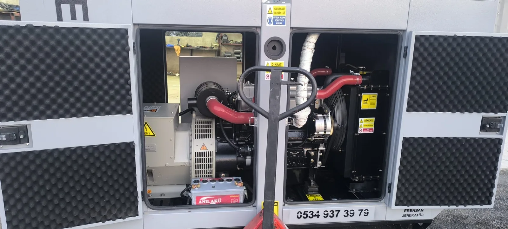

Yedek jeneratör çoğu gün çalışmaz. Kesinti geldiğinde ise birkaç saniye içinde marş alması beklenir. Bu ilk hareketi sağlayan elektrik, kontrol panosundaki pilden değil marş aküsünden gelir. Akü zayıfsa otomatik transfer panosu doğru komut verse bile motor dönmez. Kullanıcı “jeneratör arızalı” sanır; asıl sorun çoğu zaman akü veya şarjdır.
Akü Neden Zayıflar veya Biter?
- Uzun bekleme: Kurşun-asit aküler kullanılmasa da yavaşça boşalır. Haftalık test çalıştırması yapılmayan setlerde bu sık görülür.
- Şarjın kesilmesi: Şebeke beslemeli şarj cihazı fişi çekilmiş, sigortası atmış veya kartı arızalı olabilir. Motor çalışırken şarj eden sistem de arızalanabilir.
- Yüksek sıcaklık: Mersin yazında kabin içi sıcaklık akü ömrünü kısaltır. Sıcak, hem su kaybını hem iç direnci olumsuz etkiler.
- Nem ve oksit: Kutup başı ve kablo uçlarındaki oksit, marş akımını düşürür. Denize yakın sahalarda bu daha hızlı gelişebilir.
- Parazit çekiş: Kontrol modülü, ısıtıcı, izleme cihazı veya hatalı kablolama aküyü günler içinde tüketebilir.
- Yanlış akü veya yaş: Kapasitesi yetersiz, ters polariteyle takılmış veya üretim tarihi eski akü marşı taşımaz.
- Tekrarlayan başarısız marş: Yakıt veya hava sorunu varken peş peşe marş denemek aküyü hızla bitirir.
Hangi nedenin geçerli olduğu, voltaj okuması, şarj akımı, kutup başı durumu ve cihaz geçmişi olmadan uzaktan kesinleştirilemez. Marka ve model kılavuzundaki akü tipi, gerilim ve bakım notu esas alınmalıdır.
Hangi Belirtiler Aküyü İşaret Eder?
- Marş yavaş döner, tıklama sesi gelir veya hiç dönmez
- Kontrol paneli açılır ama marş rölesi çekmez
- Düşük akü veya şarj arızası uyarısı
- Otomatik modda start komutu gitmesine rağmen motor sessiz kalır
- Kısa süre önce çalışmış cihazın ertesi gün marş almaması
Yakıt yokluğu, acil stop basılı kalması, yağ basıncı veya hararet koruması da çalışmamaya yol açar. Paneli açmadan yapılabilecek güvenli adımlar için jeneratör çalışmıyor: 8 güvenli kontrol yazısını izleyin. Akü kapağını sökmek, köprü kablo bağlamak veya aküyü ev tipi şarj cihazıyla rastgele doldurmak yangın ve patlama riski taşır.
Kullanıcının Yapabileceği Güvenli Kontroller
- Acil durdurma butonunun basılı olmadığını ve otomatik/manuel seçimini görün.
- Paneldeki akü, şarj veya düşük voltaj uyarısını fotoğraflayın; silmeden kaydedin.
- Kabin dışından kablo ezilmesi, kopuk kelepçe veya sıvı kaçağı olup olmadığına bakın.
- Şarj cihazı varsa priz ve gösterge lambasının yanıp yanmadığını uzaktan kontrol edin.
- Son başarılı test tarihini ve ortam sıcaklığını not edin.
Açık kutup başına metal alet değdirmek kısa devre yapar. Akü gazı kıvılcımla tutuşabilir. Ölçüm, sökme ve takma işi eğitimli personele aittir.
Serviste Ne Test Edilir?
Yetkili kontrolde duran gerilim tek başına yeterli sayılmaz. Yük altında gerilim düşümü, şarj cihazının çıkışı, kayışlı alternatör varsa şarj voltajı, kablo kesiti ve kutup başı direnci birlikte bakılır. Bazı aküler voltajı “dolu” gösterip marş akımını veremez; bu yüzden kapasite veya yük testi üretici yöntemine göre yapılır.
Değişimde doğru gerilim (çoğu set 12 V veya 24 V), soğuk marş akımı ve fiziksel ölçü uyumu aranır. Eski akünün imha ve taşıma kuralları da servis kapsamında ele alınmalıdır.
Akünün Bitmesini Geciktiren İşletme Alışkanlıkları
- Üreticinin önerdiği aralıkta yüksüz değil, mümkünse yüklü test çalıştırması
- Şarj cihazının sürekli uygun şebeke ile beslenmesi
- Kutup başı temizliğinin bakım kaydına yazılması
- Yazın kabin havalandırmasının açık tutulması; hava yollarının kapanmaması
- Kullanılmayan sette aylarca “hiç çalışmasın” dememek
Periyot ve sarf listesi için jeneratör bakımı ne zaman yapılır rehberine ve Mersin jeneratör bakımı hizmet sayfamıza bakın. Marş almayan cihaz için 7/24 teknik servis hattını kullanın.
Sık Sorulanlar
Aküyü araba aküsüyle değiştirebilir miyim?
Boyut ve gerilim uysa bile marş akımı, çevrim tipi ve titreşim dayanımı jeneratör uygulamasına uygun olmayabilir. Yanlış akü hem marşı hem şarj sistemini bozar. Etiket ve üretici tavsiyesi olmadan değişim yapılmamalıdır.
Jeneratör çalışırken akü şarj olur mu?
Tasarımda motor çalışırken şarj beklenir. Yedek setlerde ayrıca şebeke beslemeli şarj cihazı yaygındır; çünkü cihaz günlerce durur. Hangisinin arızalı olduğu ölçümle ayrılır.
Kışın mı yazın mı daha çok biter?
Soğuk marşı zorlaştırır; sıcak ömrü kısaltır. Mersin’de yaz kabin ısısı ve nem, kutup oksidiyle birlikte sık şikâyet sebebidir. Her iki mevsimde de test ve şarj kontrolü ihmal edilmemelidir.
Kesinti anında çalışmama, yalnızca aküden ibaret olmayabilir. Yakıt, otomatik transfer ve yük planı da devrededir. İşletme maliyeti için dizel yakıt tüketimi, tesis sürekliliği için fabrika acil enerji planı yazılarını okuyabilirsiniz.